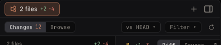
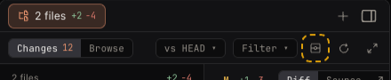
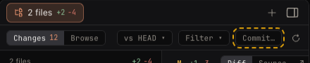

Commit from the Changes view (issue #508)
Issue #508: "Changes view has no way to commit when the repository has no GitHub remote".
In one line: add a "Commit…" button to the Workbench's Changes bar. It opens the same commit box the GitHub menu opens today, and it works whether or not the repository is on GitHub.
you change code ──▶ see the diff in Changes ──▶ click "Commit…" ──▶ type one line ──▶ "Commit"
│
today: this button does not exist. "Commit…" is only in the GitHub button's
right-click menu, and that button only shows for a github.com repository.
1. Today: a repository without GitHub has no way to commit
2. After: one more "Commit…" in the Changes bar — two looks
B (recommended): an icon button, left of reload, with the icon the GitHub menu's "Commit…" already uses; hovering shows "Commit…".
.icobtn style as reload and full width next to it.A: a text button "Commit…", right of "Filter ▾", the same .seg style as "base ▾" and "Filter ▾".
3. Clicking it: the same commit box
git add -A). On success the toast says "Committed." and Changes reloads. Closing the box leaves the keyboard where it was, as the GitHub menu's path does today (it does not jump back to the terminal).One small difference: in a GitHub repository the hint says "… on branch …". In a repository without GitHub today's code has no branch name to give, so the hint leaves it out (as the picture shows). Showing the branch there too needs one more branch read — see the second question in section 6.
4. When the button can be clicked
| Case | Button |
|---|---|
| Changes lists changes | Enabled |
| Changes lists 0 files (a clean repository, or a folder that is not a git repository) | Greyed out |
| "Browse" is picked | Not shown (only in Changes, like "base ▾" and "Filter ▾") |
| Everything is committed, but "base ▾" compares with the merge base, so Changes still lists files | Enabled; the commit fails and the toast shows git's own line, "nothing to commit, working tree clean" (checked with local git; on a remote machine the same code path picks the line, not run there) |
| A session tab whose agent is not running (a cold row) | Same as above: the Changes bar and the commit do not need the agent |
A folder that is not a git repository gives 0 files locally (statusOf returns nothing). On a remote machine it is 0 too, either as an empty answer or as a failed read — which of the two is not checked.
4b. The narrowest Workbench (440 px)
Measured on the app's own CSS. Today the Changes bar is already full at 440 px: the empty gap between "Browse" and "base ▾" keeps a 10-character minimum. With "vs HEAD" picked and 10+ changed files, today's bar already needs 465 px: full width is cut off and reload sits on the very edge (filed as #1485):

So both looks also let that empty gap shrink to nothing (one CSS rule for the Changes bar). With that:
| At 440 px | "base", 1-digit count | "vs HEAD", 2-digit count |
|---|---|---|
| B icon | fits | fits (440 of 440 px) |
| A text | fits (440 of 440 px) | 24 px too wide: reload is half cut off, full width is gone |
B at 440 px, worst case:

A at 440 px, worst case:

5. Every kind of tab works the same
The button lives in the Workbench's Changes bar, and the commit goes through main's existing commitAll: local git for a local folder, git on the other machine over SSH for a remote workspace (the GitHub menu's "Commit…" already works this way; e2e cases E-RW-29 and E-SSH-12 cover it). None of that code looks at which agent runs in the tab, so:
| Tab | Local | Remote (SSH) |
|---|---|---|
| Claude Code | Button shown, commits on this Mac | Button shown, commits on that machine |
| Codex | Same | Same |
| Muse Code | Same | Same |
| Antigravity | Same | Same |
| A workspace row's Workbench (no session; files and web pages only) | Button shown, commits the workspace folder | Same, on that machine |
The issue text says remote Codex is not available (#99). #99 is closed and remote Codex tabs exist now (remote-codex.spec.ts), so that line is out of date. E-RW-29 and E-SSH-12 commit from a remote Claude Code tab only; the new tests add the button in workbench-changes.spec.ts (local repository without GitHub: button shown, commit, toast, Changes empties; clean repository: greyed out) and one remote tab of another agent (e.g. remote-codex.spec.ts).
6. For the owner to decide
Question 1: what does the button look like?
| Option | Look | Cost |
|---|---|---|
| B. Icon only (recommended) | Left of reload, with the existing icon of the GitHub menu's "Commit…"; "Commit…" shows on hover | Fits every measured case at 440 px; someone who does not know the icon has to hover once to learn it |
| A. Text button "Commit…" | Right of "Filter ▾", same style as it | Readable at a glance; at 440 px with "vs HEAD" and 10+ files it is 24 px too wide, so reload and full width get cut off |
Question 2: in a repository without GitHub, does the commit box name the branch?
| Option | Cost |
|---|---|
| No (recommended) | No new code; the hint lacks "on branch" |
| Yes | One more git call to read the branch each time the box opens; a little more code and a test |
7. What stays and what is left out
- The GitHub menu keeps its "Commit…". A GitHub repository then has two ways into the same box.
- No "Push" in the Changes bar: the issue asks only for commit. A repository without GitHub is still pushed from the terminal.
- No new dialog, no new icon, no change to how the commit runs. The only CSS change is letting the Changes bar's empty gap shrink, which also fixes #1485.